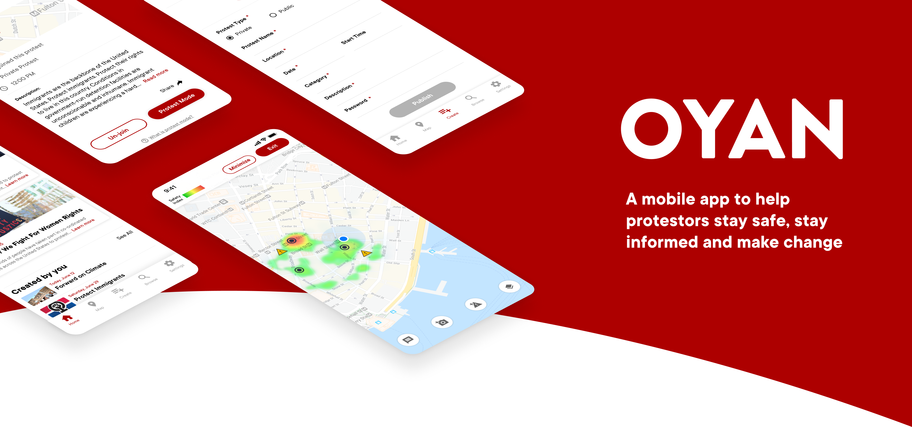
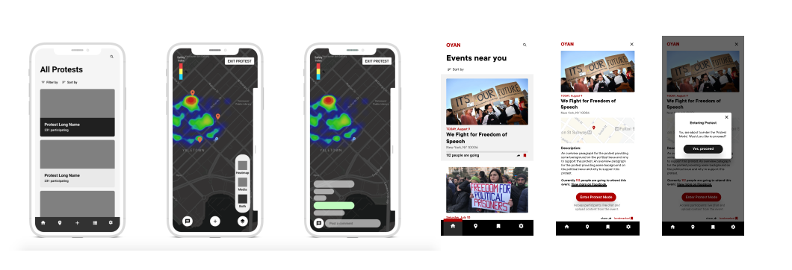
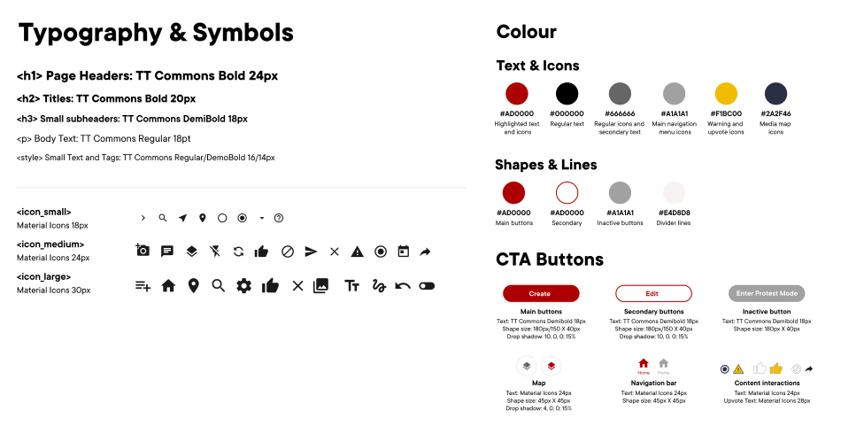

OYAN is a mobile app we designed for a course on Interface Design. OYAN supports the protesters by keeping them informed and helping them coordinate the demonstrations using built-in GPS and Bluetooth technologies. In a team of four, I was responsible for UI design, interaction design, user testing, and prototyping.
Protests play an important part in the civil, political, economic, social and cultural life of all societies. They inspire positive social change and the advancement of human rights in all parts of the world.
To derive the application persona and the journey map, we conducted several interviews with the people that come from Kazakhstan and Hong Kong. At the current moment, these two regions are experiencing a lot of political changes, which became a reason for mass protest outbreaks and arrests. From the interviews, we drew some insights as following.
Protests are very unpredictable. They can expand and start moving through the streets. They can get very violent very quickly. You never know what to expect.
When organizing and participating in the protests, people risk becoming easy targets as their identity could be easily uncovered.
Support protesters' by providing a platform to coordinate demonstrations, keep each other updated and safe.
Leverage anonymity to preserve protesters’ identities and personal information. Remove leaders in the creation of protests to decentralize power and avoid being targeted.
To finalize the application workflow and design, our team went through numerous iterations. At first, to understand and evaluate planned functionalities, we created preliminary sketches and grey box wireframes. Then, we started refining our visual direction and creating interactive-prototypes of the interface workflows for further testing.
Problem: Since the system does not require user login, some users may post some untrue messages to cause chaos.
Solution: Report system that allows users to report falsified content and fake alert to keep information trustworthy in the community. Users can also upvote messages to make helpful ones appear first to others.
Problem: The users may likely to flew away from the dangerous area and later want to submit a safety report, they can only submit based on their current location.
Solution: Added a time frame slider to allow users to report any safety issues from now to 30 minutes ago, and the system will locate their position based on GPS at that moment.
Based on the user testing feedback and additional research, we created the final application style guide and refined existing journey map and workflows to inform and expand on OYAN’s visual direction and functionalities.
Older version of user journey
Final version of user journey
The context of our application did not allow us to conduct user testing in a realistic setting. Instead, we tested and interviewed political activists and people that know how protests operate. Thus, we believe that further research with real protest participants would be a great opportunity to expand on the application’s performance.
In this project, I was required to jump out of my cultural background and study into the subject area and target users as a designer. Despite the political factors, I was largely involved in the design and refinement of user workflow as well as designing micro-interaction to elaborate the user experience. As the leader of prototype making, I managed to use Figma and ProtoPie to produce a product that is realistic enough for users to input data like text or images.